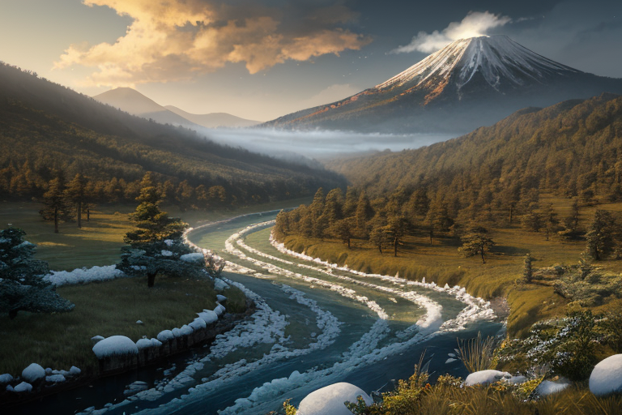
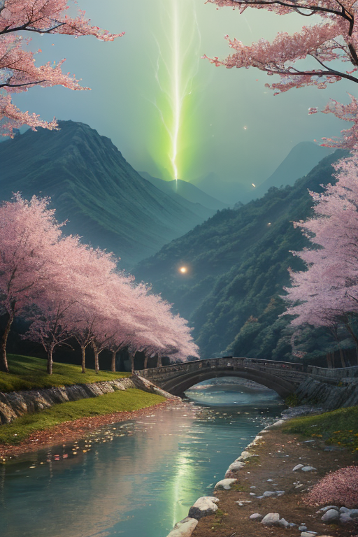
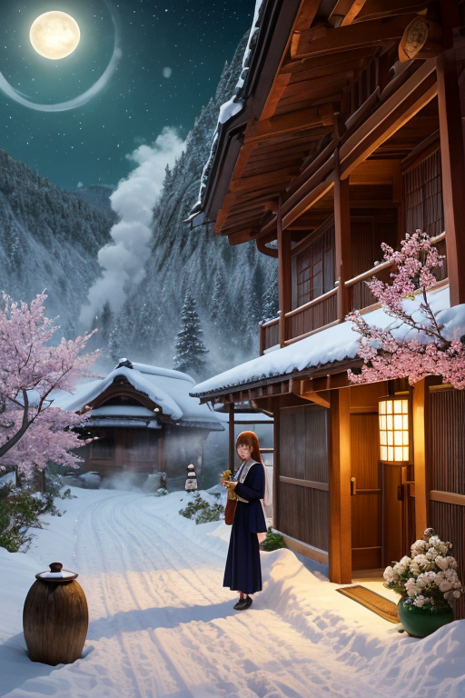

第一章 現実の山形
あなたはまだ気づいていない。この土地にも、王がいることを。
最上川は、山形の内陸を静かに刻む境界線だ。海へと向かうその流れは、外の世界への通路であると同時に、この盆地を守る堀でもある。蔵王連峰の稜線は、空と地を分かつもう一つの境目。その山懐に抱かれた蔵王温泉の湯煙の向こうには、冬になれば樹氷という異形の森が現れる。内と外、日常と非日常の狭間。この土地は、そうした境界でできていた。
歪みの列島において、山形は内陸の境を司る。地盤の軋みは海溝ほど激烈ではないが、深く、静かに、確実に蓄積される。王、ヤマガリア・フルクトは、その蓄積された圧力が一気に解放されるのを、千年単位の時間をかけてほんの少しずつ逃がしている。大きな揺れではなく、無数の微振動へと分散させるのだ。彼の仕事は、目に見える結果よりも、見えない過程そのものにある。地中で忍耐強く続けられる、果てしない調整の作業。それは、実りを待つ農耕の時間に似ていた。
「待つことは、敗北か？」
王は、冷たい岩盤に手を触れながら、自らに問いかける。答えはまだ出ない。ただ、彼の手からは、朱と緑の微光が、地層の裂け目へと静かに滲み込んでいく。

第二章 歪みの兆候
蔵王の山肌に、異質な歪みが走った。遠く北の海で生まれた巨大な力が、地脈を伝い、この内陸の王国にまで押し寄せてくる。それは境界線に立つ王国ゆえの宿命だった。ヤマガリアは最上川の畔に立ち、流れの速度を僅かに遅らせた。増水を防ぐためではない。下流の町で、避難のための「あと数秒」を生み出すためだ。
「王様、また外からの歪みです」
フルッタが囁いた。彼女の声には、母性的な諦めに似た響きがあった。
「待っていても、次から次へと波は来る。この忍耐に、意味はあるのでしょうか」
王は答えず、銀山温泉の地熱の流れを調整した。巨大な力の余波を、温泉街の建物を揺らす前に、幾筋もの細かい振動へと解きほぐしていく。彼の仕事は防御ではなく、変換である。敗北を遅延させ、その間に生まれる偶然を、人の営みへと紡ぎ変えること。
待つことは、ただ受動的に耐えることではない。彼はそう信じたい。流れを変え、形を変え、その「間」にこそ、次の一歩を踏み出すための地ならしがある。
第三章 王の葛藤
蔵王の樹氷は、歪みの波を吸い込む巨大な緩衝材だった。ヤマガリアはその冷気の中に立ち、地殻の軋みを全身で受け止める。歪みは消えない。彼にできるのは、その衝撃を、山肌を削る雪崩ではなく、静かな雪解け水へと変えることだけだ。
「待つことは、敗北か」
彼の内側で、核となる問いが軋んだ。かつての王には、この問いはなかった。待つことは、調整の一環でしかない。しかし今、彼は知っている。待つ間に、桜桃の実は鳥に啄まれ、冬の寒さは芽を枯らすこともある。忍耐が、ただの徒労に終わることもあるのだ。
「王様」フルッタがそっと肩に触れた。「この土地の人々は、長い冬を『待つ』ことで、春の実りをより深く味わうことを知っています。待つことは、受け身ではありません。次の一手を、心に描く時間なのです」
彼は最上川の流れを見下ろした。芭蕉が舟で下ったその川は、時に氾濫し、時に枯れる。それでも流れを止めない。流れを変え、形を変え、ただ前に進む。彼の役目は、その「流れ」が、決して人々の営みを押し流さないように、ほんの少し、方向を調整することだ。敗北ではない。次の実りのための、地中の根が張る時間。彼はそう言い聞かせ、微かな歪みの波を、蔵王の風に溶かし込んだ。
第四章 妖精との対話
蔵王温泉の硫黄の匂いが、冷えた空気に混じる。露天風呂の縁に腰を下ろしたヤマガリアは、湯気の向こうに広がる樹氷の白い森を見つめていた。妖精フルッタが、そっと彼の肩に止まる。
「王様は、まだあの問いを抱えていますね」
「……待つことは、敗北か。芭蕉もまた、この地で何かを待っていたのだろうか」
フルッタの羽が微かに揺れた。「芭蕉様は、『閑さや岩にしみ入る蝉の声』と詠まれました。あの『閑さ』は、何もない空虚ではありません。岩に染み入るまで、全ての音を聞き分ける、深い『待ち』の状態です」
湯気がゆらめき、サクランが現れた。「出羽三山の修験者たちも、厳しい冬を『待ち』ました。それは苦行ではなく、山そのものが教える、次の芽吹きのための呼吸法です」
ヤマガリアは掌を開いた。微かな歪みの波が、温泉の熱に揺らめいている。「私はただ、災いが来るのを遅らせ、人々が逃げる時間をほんの少しだけ引き延ばしているに過ぎない」
「でも」フルッタの声は母のように柔らかい。「その『ほんの少し』の間に、芋煮の鍋が囲まれ、将棋の駒が一手進み、次の花笠が編まれ始める。待つことは、次の動きのための、確かな構えです。敗北などではありません」
ヤマガリアは、樹氷の枝に積もる雪が、春には最上川の水となり、さくらんぼを潤すことを思った。全ての待ちには、その先がある。

第五章 微調整と余韻
蔵王温泉の硫黄の湯気が、冬の夜空に溶けていく。ヤマガリアは、旅館の縁側に立っていた。今夜も、地盤の微かな歪みを、枝を伸ばすように整えている。彼の仕事は、大災害を消すことではない。ほんの少しのずれを直し、人々の日常が途切れないようにすることだ。
湯から上がった老夫婦が、廊下ですれ違う。ぎこちない会釈を交わす二人は、どうやら見知らぬ客同士らしい。次の瞬間、老夫婦の一人が、ふと「芋煮会は、もうお済みですか」と声をかけた。もう一人の顔が緩む。会話の糸口が、ほんのわずかなタイミングで生まれた。ヤマガリアが、一瞬の「間」を調整したわけではない。彼が日々整えるこの土地の、ゆったりとした時間の流れが、自然にそうさせたのだ。
彼は銀山温泉の街並みを思い浮かべた。芭蕉が立ち寄ったというその地で、今、異国の観光客がカメラを構えている。彼らと地元の人々の間に、言葉の壁はある。でも、温かい湯と雪景色は、壁を薄くする。待つこと。それは、異なるものがゆっくりと混ざり合うための、必要な時間なのだ。
ヤマガリアは、手にした朱と緑の紋章が、月明かりに微かに光るのを見つめた。結果を急がず、過程を見守る。この忍耐が、この土地の、目に見えぬ実りを支えている。彼はそう確信していた。
あなたの町にも、王がいる。